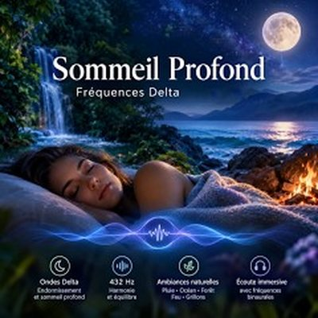
Sommeil • Binaural Delta
Sommeil Profond
Ambiances musicales conçues pour accompagner le repos et l'endormissement, avec des battements binauraux Delta selon les créations.
ZEN MUSIC SYSTEM réunit des compositions musicales converties en 432 Hz, des fréquences Solfeggio et des battements binauraux, des sons authentiques de la nature, une spatialisation audio 3D/8D et des chansons françaises positives. Chaque univers possède sa propre identité sonore.
Tous les liens officiels : linktr.ee/zenmusicsystem432 Hz & fréquences Solfeggio
Enregistrements et paysages sonores
Instrumental, mantras & chansons positives
Binaural & audio stéréo 3D/8D
Chaque playlist possède son intention, son ambiance et ses caractéristiques musicales. Les pochettes sont celles des podcasts ZEN MUSIC SYSTEM sur YouTube, et chaque bouton ouvre la playlist correspondante.

Sommeil • Binaural Delta
Ambiances musicales conçues pour accompagner le repos et l'endormissement, avec des battements binauraux Delta selon les créations.
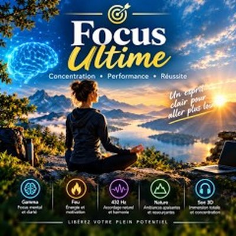
Concentration • Gamma
Univers sonore dédié à la concentration, associant battements binauraux Gamma et ambiance autour du feu.
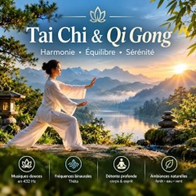
Tai Chi • Qi Gong • Theta
Compositions en 432 Hz et fréquences Theta pour accompagner les pratiques de Yoga, Tai Chi et Qi Gong.
Chansons françaises • Paroles positives
Chansons françaises inspirées de l'univers des mantras, avec des paroles originales écrites par ZEN MUSIC SYSTEM, des voix et des mélodies autour du 432 Hz.
Enregistrements authentiques
Sons réels de la nature : vagues, oiseaux et ambiances extérieures enregistrées pour retrouver la richesse des paysages sonores naturels.
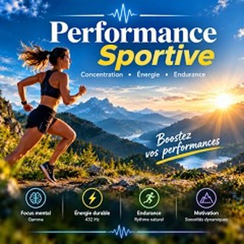
Course à pied • Gamma
Musiques dynamiques pour accompagner la course à pied et les entraînements, avec une orientation rythmique et des battements binauraux Gamma selon les créations.
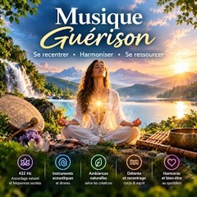
Percussions rituelles • Voyage intérieur
Compositions instrumentales à l'identité rituelle, associant tambours chamaniques, didgeridoo, flûtes, mélodies celtiques, bâton de pluie et chœurs féminins.
Les fréquences, les textures, les voix et les sons naturels sont associés selon l'intention de chaque création.
Base musicale
La musique de ZEN MUSIC SYSTEM est convertie en 432 Hz par ajustement de la hauteur. Cette fréquence constitue une base de l'identité musicale du projet.
Ondes & fréquences
Battements binauraux Delta, Theta, Alpha, Beta et Gamma, ainsi que fréquences Solfeggio, intégrés selon les univers et les compositions.
Captations naturelles
Vagues, oiseaux, pluie, eau et ambiances extérieures : des enregistrements authentiques qui conservent leur place au cœur de l'expérience sonore.
Écoute immersive
Une spatialisation stéréo large pour donner de l'ampleur au paysage sonore. Un casque stéréo est recommandé pour profiter des battements binauraux.
L'univers ZMS rassemble des musiques instrumentales, des mantras, des chansons françaises positives avec paroles originales et des captations naturelles. Les voix et les paroles font pleinement partie de certaines créations.
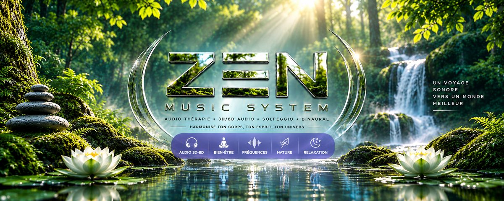
Explorez les différentes créations : sommeil, concentration, Yoga & Qi Gong, sons naturels, performance sportive, musique instrumentale rituelle et chansons positives. Chaque playlist présente son propre univers sonore.
Retrouvez ZEN MUSIC SYSTEM sur les plateformes de streaming, les réseaux décentralisés et les réseaux sociaux. Écoutez la musique là où vous préférez, et échangez directement avec le projet.
Toutes les plateformes de streaming et de diffusion
Regarder les créations sur des alternatives éthiques
Suivre les actualités du projet au quotidien
Votre retour façonne les prochaines créations sonores
Les sept univers sonores, accès direct
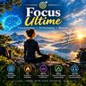
Focus Ultime — GammaConcentration et travail mental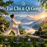
Yoga & Qi Gong — ThetaPratiques douces en 432 Hz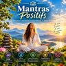
Chansons PositivesChansons françaises à paroles positives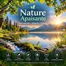
Nature ApaisanteEnregistrements authentiques de la nature Performance Sportive — GammaCourse à pied et entraînement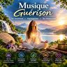
Musique GuérisonPercussions rituelles et voyage intérieur